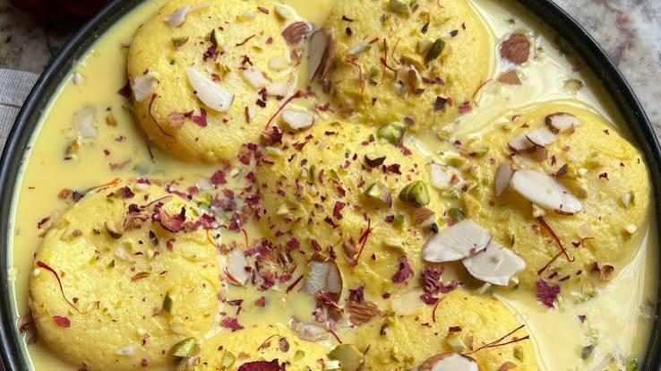

RECIPE OF RASMALAI

Rasmalai is a classic South Asian dessert made of soft, spongy cottage cheese (chhena) patties soaked in sweetened, thickened, and flavored milk (rabri).
INGREDIENTS FOR RASMALAI
- Chhena (Rasmalai Discs) Ingredients
- Full-fat milk: 1 litre (for curdling to make paneer/chhena)
- Acid agent: 3–4 tablespoons of lemon juice or white vinegar (mixed with 2 tablespoons of water)
- Binding agent: 1 teaspoon cornflour (or cornstarch) to help hold the discs together
- Ice water: 4 cups (to stop the cooking process of the curds)
- Sugar Syrup (Poaching Liquid)
- Sugar: 1 cup white granulated sugar
- Water: 4 cups water
- Cardamom: 2 green cardamom pods (crushed)
- Flavoured Milk (Rabri / Ras) Ingredients
- Full-cream milk: 1 to 1.5 litres
- Sugar: 2 to 6 tablespoons (or 1/4 cup, adjusted to taste)
- Saffron: A generous pinch or 8–10 saffron strands (kesar)
- Cardamom powder: 1/2 teaspoon green cardamom powde
- Nuts for garnish: Sliced or chopped pistachios and almonds (about 1 tablespoon each)
- Heavy cream: 1/4 cup (optional, for extra richness)
Step-by-Step Instructions
Make the Chhena
- Bring 1 litre of cow milk to a boil in a heavy-bottomed pan. Turn off the heat and let it cool for 1–2 minutes.
- Slowly add the diluted lemon juice or vinegar while stirring gently until the milk curdles completely, separating the chhena from the greenish whey
- Strain the chhena through a muslin cloth or fine strainer and rinse it well with cold water to remove the sourness.
- Squeeze out the excess water and hang or rest the chhena for about 15–30 minutes so it stays slightly moist.
- Transfer the chhena to a clean surface and knead it firmly with the heel of your palm for 8–10 minutes until it becomes smooth, soft, and binds together.
- Add the corn flour and knead for another 2 minutes.
- Divide the dough into 12 equal portions, roll them into smooth, crack-free balls, and gently flatten them into round discs
Cook the Discs in Sugar Syrup
- In a wide pot, combine 1 cup of sugar and 4–5 cups of water, then bring it to a rolling boil.
- Gently drop the flattened chhena discs into the boiling syrup
- Cover the pot with a lid and cook on medium-high heat for about 10–15 minutes until the discs puff up and double in size.
- Remove from heat and let them cool down. Gently press each disc between your palms to squeeze out the hot syrup, then set them aside.
Prepare the Rabri
- In a separate heavy pan, bring 1 litre of full-cream milk to a boil, then lower the heat and let it simmer until it reduces slightly and thickens.
- Add the saffron strands, cardamom powder, sugar, and half of the chopped nuts. Simmer for another 2–3 minutes.
- Let the rabri cool down to room temperature.
Assemble and Chill
- Place the squeezed chhena discs into the cooled saffron rabri.
- Garnish the top with the remaining sliced pistachios and almonds.
- Refrigerate for at least 4 to 5 hours (or overnight) so the discs soak up the rich milk before serving chilled.
Here click on the emoji for recipe video 🤤